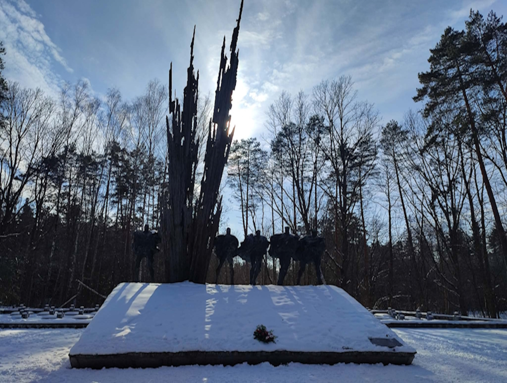

Bitwa w Puszczy Solskiej
Operacja „Sturmwind II” – Niemcy otaczają partyzanckie zgrupowanie w Lasach Janowskich i Puszczy Solskiej. Partyzanci (Armia Ludowa, Bataliony Chłopskie, oddziały radzieckie) pod dowództwem płk. Mikołaja Kunickiego „Muchy” postanawiają przebić się przez pierścień okrążenia.
Główne uderzenie – O świcie rozpoczyna się bitwa w rejonie Porytowego Wzgórza. Mimo przewagi wroga (artyleria, lotnictwo) partyzantom udaje się przełamać niemieckie linie pod wsią Momoty Górne. Ciężkie straty po obu stronach – ok. 400 partyzantów poległo, niemieckie straty szacuje się na kilkuset żołnierzy.
Wyjście z okrążenia – Dzięki ofiarności i manewrowi taktycznemu główne siły partyzanckie (ok. 2000 ludzi) wychodzą z kotła. Bitwa pod Porytowym Wzgórzem stała się symbolem walki ruchu oporu z przeważającymi siłami okupanta.
„(...) ziemia drżała od wybuchów, a my szliśmy dalej. Każdy wiedział, że tam jest śmierć, ale innego wyjścia nie było. Przebiliśmy się.”
Dowódcy zgrupowania
Stanisław Puchalski
kapral podchorąży, partyzant z oddziału "Ojca Jana".
Marian Mizgalski
Partyzant z zgrupowania kpt. "Żegoty", w Listopadzie 1943r. przeniesiony do odziału "Ojca Jana". Odznaczony Orderem Virtuti Militari V klasy
Bolesław Usow
Podporucznik Armii Krajowej, porucznik Narowodwego Zjednoczenia Wojskowego, kawaler Krzyża Srebrnego Orderu Virtuti Militari
Tadeusz Gryblewski
Brał czynny udział w konspiracji ZWZ/AK na terenie placówki Józefów, potem Kocudza w Obwodzie ZWZ/AK Biłograj.
Znaczenie bitwy
Przełamanie mitu
Pokazano, że skoncentrowane oddziały partyzanckie mogą wyrwać się z okrążenia nawet z ogromną przewagą wroga. Podniosło to morale ruchu oporu.
Koszt
Poległo około 400 partyzantów, w tym wielu dowódców. Niemcy stracili co najmniej 500 żołnierzy, ale ich plan zniszczenia partyzantki w regionie załamał się.
Pamięć
Porytowe Wzgórze stało się miejscem pamięci narodowej. Coroczne uroczystości, pomnik i izba pamięci w Momotach Górnych.
Obszar walk
Kierunek uderzenia partyzanckiego
Miejsce pamięci

Wstaw własne zdjęcia, podmieniając background-image w divie .gallery-image.
Źródła historyczne
Bibliografia i archiwalia
- Nazarewicz R. – „Największe bitwy partyzanckie 1939–1945”, Wydawnictwo MON, Warszawa 1970.
- Mańkowski Z. – „Między Wisłą a Bugiem 1939–1944. Studium historyczne”, Wydawnictwo Lubelskie, Lublin 1978.
- IPN – „Konspiracja i opór społeczny w Polsce 1944–1956. Tom 5: Lubelszczyzna”, Warszawa 2008 (rozdział o bitwach partyzanckich).
- Gmitruk J., Matusak P. – „Bataliony Chłopskie na Lubelszczyźnie (1940–1944)”, Ludowa Spółdzielnia Wydawnicza, 1985.
Wszystkie materiały zostały zweryfikowane pod kątem rzetelności historycznej. Cytaty i dane liczbowe pochodzą z ww. publikacji.